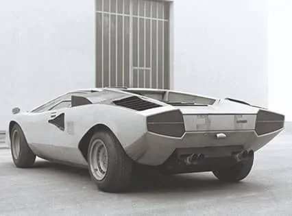
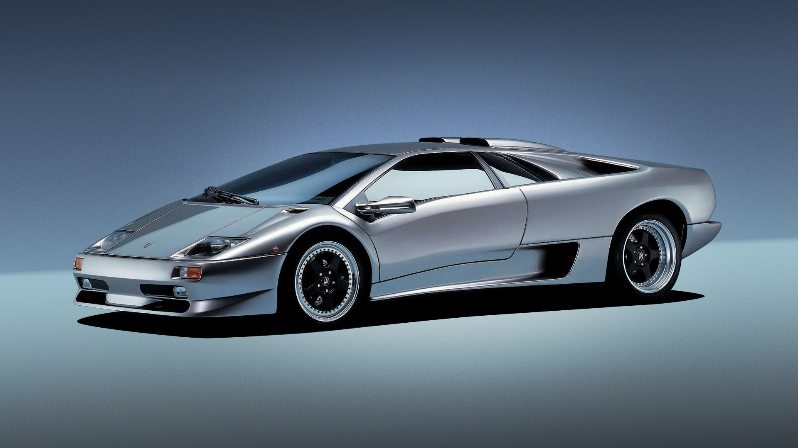

The changes that were taking place around Lamborghini, however, reflected the social situation around the world, particularly in Italy. Labour unions' unrest in that period created a difficult situation in all factories,
particularly at engineering companies in northern Italy, in which the owner's control was openly contested and proper organisation became increasing difficult. For Lamborghini, long accustomed to the direct, sometimes rough, somewhat paternalistic
but attentive control of his factories, this new situation became intolerable. In 1972 he sold his majority stake to the Swiss Georges-Henri Rossetti, and the following year he sold his remaining shares to a friend, René Leimer. Thus,
the company founder - the man who had been the driving force behind its extraordinary, vital explosion during the first eight years - left the scene for good.
The company continued to work at its regular pace. In 1972, the P250 Urraco, the 400 GT Jarama, the 400 GT Espada and the P400 Miura SV were in full production. That year, in an attempt to improve sales that were
frankly quite disappointing until then, the Jarama hand a 365-hp engine and was dubbed the Jarama S.
In 1972, the Urraco, which had experienced several initial slowdowns, was finally put into production. Almost inevitably, the S version also arrived in October of that year. In this case, the goal was not to enhance
the car's performance but to improve its overall quality, which had been neglected in the haste to start production.
The following year, while waiting for the Countach prototype to be developed to a stage that would enable its production, the Espada was further modified and perfected, and the new series was presented in October
1972. New wheels as well as perfected detailing of the entire body, the dashboard, the central instrument panel and various components characterised this well-made Series III. This last series essentially represented the decisive peak
in the evolution of this outstanding four-seater, which is still in great demand among Lamborghini fans around the world. Its production would reach the respectable figure of 1226 units, quite a large number for a carmaker of this size
selling at top-level list prices.
The production model of the Countach was codenamed LP 400 because its V12 - positioned longitudinally behind the cockpit - was increased to an ideal displacement of 4 litres (3929 cc). This model debuted at the 1973
Geneva Motor Show.
Standard production of the Countach began at the end of 1973 with the bright-green model exhibited at the Paris Motor Show, which is now part of the permanent collection of the Lamborghini Museum. This was the first
Countach featuring the large single front windscreen wiper. The model range for 1974 thus included the Countach, the Espada Series III, the Jarama S and the Urraco S.
In the meantime, the world was changing. The oil crisis sparked by the 1973 Arab-Israeli War created a climate of fear about petrol supplies. As a result, the big, fuel-guzzling super sports cars rapidly became passé.
They were considered the expression of unjustifiable luxury, whose exploitation of too much of our planet's natural resources was no longer acceptable. These were extremist stances that were destined to pass, but at the time they created
enormous difficulties for all the makers of this type of car. Given its market position at the top end of the super car segment, Lamborghini was dealt a particularly harsh blow and the company did its best to react. In an attempt to overcome
these problems, two new Urraco models were presented. In effect, they were spin-offs of the P250 range: a two-litre model (P200), again with a single camshaft but this time with a lower engine displacement in deference to tax restrictions,
and a more powerful and mature 3-litre model (P300), with double overhead camshaft timing system and the power raised to 250 hp.
The gradually deteriorating social situation and the drop in sales made it necessary to streamline the production range.
|
 |
 |
The House of the Raging Bull showed the first driveable prototype of the Lamborghini "Concept S" at the Monterey Concorso Italiano and at the Pebble Beach Concours d'Elegance in the USA in August 2005. The Lamborghini
"Concept S" design study premiered at the previous' Geneva Motorshow as an extreme and spectacular expression of the Lamborghini brand. It was created at the Centro Stile Lamborghini in Sant'Agata Bolognese by Luc Donckerwolke, who drew
inspiration from the classic single-seater racing cars of the past. The astonishing amount of public interest at the Geneva Motor Show prompted the decision to build a driveable prototype in order to further gauge potential customer demand.
Two years after the launch of the Coupé version of the Gallardo, Automobili Lamborghini presents the new Lamborghini Gallardo Spyder at the Frankfurt Motor Show in September 2005. This latest addition brings the marque's
range of supercars to four models. The Gallardo Spyder is not just an open-top version of the Coupé, but is a completely new model. It has an attractive new design and a unique system for opening and closing the fabric roof that utilises
the engine compartment to store the folded roof. The Lamborghini Centro Stile and engineers from the Research and Development team have worked in close partnership to develop this new design and to bring these clean and sharp lines on
the road. The new Lamborghini Gallardo Spyder is powered by the 90° V-engine familiar from the 2006model- year Lamborghini Gallardo and the Lamborghini Gallardo SE. It is a ten-cylinder unit with a displacement of 4,961 cc and a maximum
output of 520 bhp (382 kW) at 8000 rpm. At more than 100 bhp per litre, its specific output is on a par with that of racing cars. The new six-speed gearbox has shorter ratios. More specifically, compared to the original version, first
gear is 27% lower, second gear is 13%. Third, fourth and fifth gears are all 6% lower, while sixth gear is 3.5% lower. The six-speed gearbox operates with the latest double- and triple-cone synchromesh. The optimized gearshift linkage
is user-friendly and permits precise, rapid gear shifts. The Lamborghini Gallardo Spyder can also be specified with 'e.gear', an electronically controlled, sequential gear shift.
As with every Lamborghini, the Gallardo Spyder adopts the stylistic principles of purity, athleticism and sharpness. The Spyder is not just an open-top version of the Coupé, it sets forth the tradition as seen with
Murcielago Coupé and Roadster creating a self standing model.
January 2006: the House of the Raging Bull brings back a legendary name from the company's past with the breathtaking "Lamborghini Miura Concept".
The "Lamborghini Miura Concept" will be the first Lamborghini vehicle to be conjured from the talented pen of Walter de' Silva, Head of Lamborghini Design. de' Silva's other design responsibilities include serving
as Head of Design of Audi Group. Automobili Lamborghini anxiously begins the New Year with the highly anticipated unveiling of the "Lamborghini Miura Concept," a modern interpretation of the Lamborghini Miura, currently celebrating its
40th Anniversary.
|
In 2010, the Sesto Elemento concept car was unveiled. It displayed Automobili Lamborghini's exceptional expertise in applying carbon-fiber technology in every field. Only 20 units of the new super sports car were produced,
and they were only destined for track use.
The following year, 2011, saw the debut of the new V12 model, the Aventador LP 700-4, which with its unique design and innovative technological package represents the new industry standard in the world of super sports
cars.
Three special series were also introduced in the same year – the Gallardo Bicolore; the Gallardo Tricolore, in homage to the 150th anniversary of Italian unification; and the Super Trofeo Stradale, inspired by the
Super Trofeo from the Lamborghini Blancpain Super Trofeo championship – as well as a derivative, the rear-wheel-drive Spyder LP 550-2.
|
 |
 ;
;